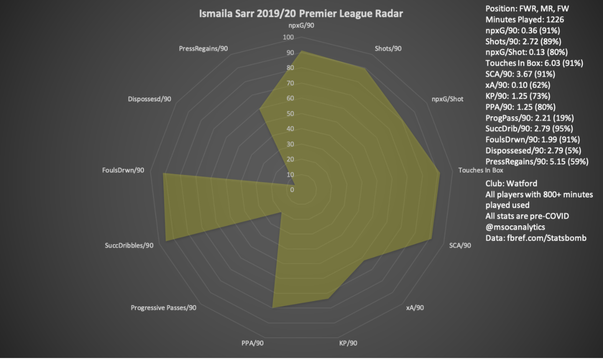

-
Arteta seems to be the right man for the Arsenal job and I hope he can get the best out of his young star. Saka will likely have an opportunity to make a bigger impact on Arsenal next season with teammates Pierre Emerick-Aubamayeng and Alexandre Lacazette’s future up in the air.

Grealish’s quickness and vision makes him an incredibly dangerous player who opponents often key on. He is the most fouled player in the Premier League this season, which is a compliment of sorts.
Manchester United were once rumored to be interested in him and with Bournemouth in a relegation battle he could also be available on the cheap if they drop down to the Championship. A return to Sheffield United could be on the cards with the Blades sitting comfortably in 7th place.
McNeil is also a dead ball specialist who is not afraid to shoot from 30+ yards. His style of play reminds me of Erik Lamela, with silky dribbling and an outstanding left foot. He has been linked with Manchester United, Arsenal and Newcastle United. With two goals and six assists this season in the Premier League he isn’t the total package yet, but he’s well on his way to a top six side.


“The 2019-20 season has been a breakout campaign for Traoré who moved from Middlesbrough in 2018 for a fee of $22 million. At the time his market value was just $8.8 million according to Transfermarkt — but with Traoré his value has always been about his potential not necessarily his current ability.